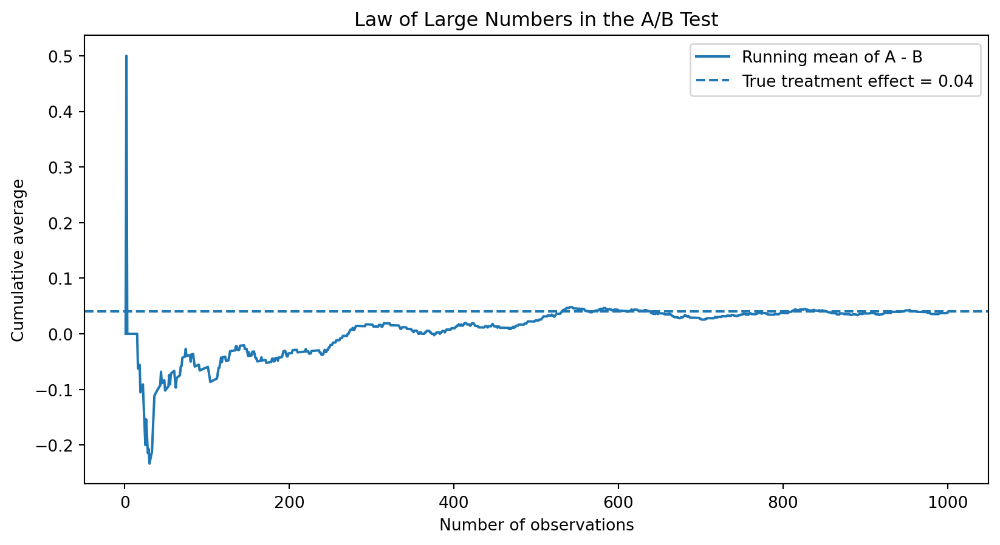
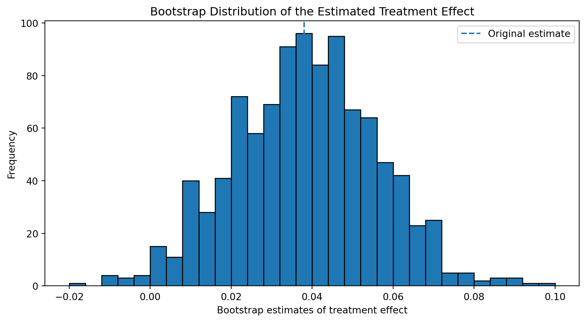
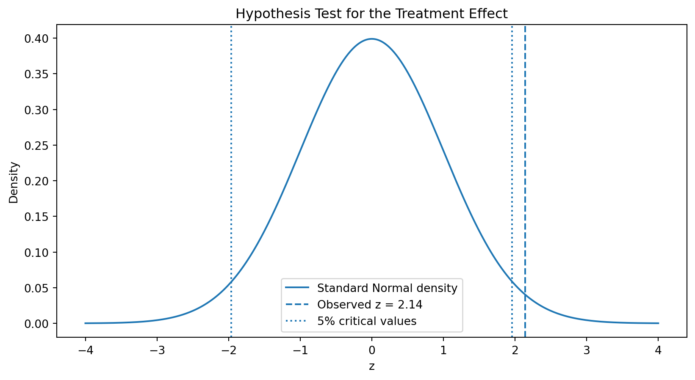
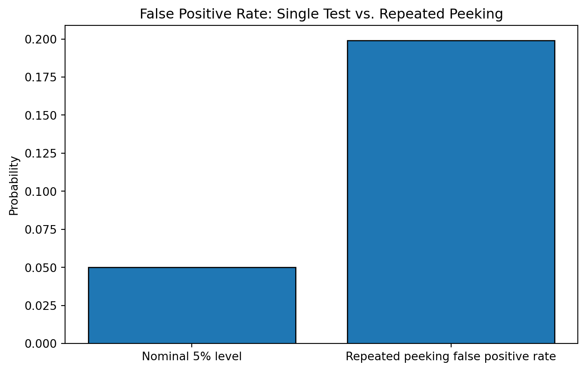

Simulating Key Ideas from Classical Frequentist Statistics
Author
Lingyuan Meng
Published
April 15, 2026
Introduction
Suppose I manage a website with a landing page that invites visitors to sign up for a newsletter. I want to know whether the wording of the call to action affects whether visitors subscribe. In this experiment, CTA A says “Sign up for our newsletter here!” while CTA B says “Stay up to date by signing up!” Visitors are randomly assigned to see one of the two versions, and I compare the sign-up rates between the groups.
This is a standard A/B test. The goal is to estimate whether one version of the message leads to a higher conversion rate than the other. More broadly, this example provides a useful setting for understanding several key ideas in frequentist statistics, including simulation, the law of large numbers, the bootstrap, hypothesis testing, and the risks of repeated peeking at the data.
The A/B Test as a Statistical Problem
Each visitor either signs up for the newsletter or does not, so the outcome for each person is binary. Because of this, each observation can be modeled as a Bernoulli random variable with a success probability equal to the probability of signing up.
Let \(\pi_A\) represent the probability of signing up under CTA A, and let \(\pi_B\) represent the probability of signing up under CTA B. The main parameter of interest is the difference in conversion rates:
\[
\theta = \pi_A - \pi_B
\]
In the sample, I estimate this quantity using the difference in observed sign-up proportions:
\[
\hat{\theta} = \bar{X}_A - \bar{X}_B
\]
Since the outcome is either 0 or 1, the sample mean in each group is just the proportion of visitors who signed up. This makes the difference in sample means a natural estimator for the treatment effect in this A/B test.
Simulating Data
In a real A/B test, the true conversion rates would be unknown. However, simulation is useful because it allows me to study how the estimator behaves when the true values are known. For this exercise, I assume that the sign-up probability under CTA A is \(\pi_A = 0.22\) and the sign-up probability under CTA B is \(\pi_B = 0.18\). This means the true treatment effect is:
\[
\theta = 0.22 - 0.18 = 0.04
\]
Using these values, I simulate 1,000 visitors in each group and compare the observed conversion rates.
The Law of Large Numbers says that as the sample size grows, the sample average gets closer to the true population average. In this A/B test, that means the estimated treatment effect should move closer to the true difference in conversion rates as more observations are included. With only a few observations, the estimate can fluctuate a lot, but with a larger sample it becomes more stable.
To illustrate this, I compute the element-wise differences between the simulated outcomes in group A and group B, then calculate the cumulative average of those differences. If the Law of Large Numbers is working as expected, the running mean should gradually settle near the true treatment effect of 0.04.
diffs = A - Brunning_mean = np.cumsum(diffs) / np.arange(1, n +1)plt.figure(figsize=(10, 5))plt.plot(np.arange(1, n +1), running_mean, label="Running mean of A - B")plt.axhline(0.04, linestyle="--", label="True treatment effect = 0.04")plt.xlabel("Number of observations")plt.ylabel("Cumulative average")plt.title("Law of Large Numbers in the A/B Test")plt.legend()plt.show()

Bootstrap Standard Errors
A point estimate by itself does not tell us how precise the estimated treatment effect is. To measure uncertainty, I use the bootstrap. The basic idea is to repeatedly resample with replacement from the observed data in each group, recompute the estimated treatment effect each time, and then use the spread of those bootstrap estimates to approximate the standard error.
I generate 1,000 bootstrap replications. In each replication, I sample 1,000 observations with replacement from group A and 1,000 observations with replacement from group B, then calculate the difference in sample means. The standard deviation of these bootstrap estimates is the bootstrap standard error.
plt.figure(figsize=(10, 5))plt.hist(boot_thetas, bins=30, edgecolor="black")plt.axvline(theta_hat, linestyle="--", label="Original estimate")plt.xlabel("Bootstrap estimates of treatment effect")plt.ylabel("Frequency")plt.title("Bootstrap Distribution of the Estimated Treatment Effect")plt.legend()plt.show()

The Central Limit Theorem
The Central Limit Theorem explains why Normal-based statistical inference works so well in large samples. Even when the original data are not Normally distributed, the sampling distribution of the sample mean tends to become approximately Normal as the sample size gets larger. In this A/B test, the individual outcomes are Bernoulli, so the raw data are highly discrete. However, the estimated treatment effect can still have an approximately bell-shaped sampling distribution when the sample size is sufficiently large.
To illustrate this, I repeatedly simulate the estimated treatment effect at several different sample sizes. For each sample size, I generate many independent A/B tests, compute the difference in sample means, and then examine the distribution of those estimates.
A hypothesis test asks whether the observed difference in sign-up rates is large enough that it would be unlikely to occur just by random chance. In this A/B test, the null hypothesis is that the two CTAs perform equally well, while the alternative hypothesis is that they have different conversion rates:
\[
H_0: \theta = 0
\]
\[
H_1: \theta \neq 0
\]
Using the estimated treatment effect and its standard error, I compute a z-statistic. Under the null hypothesis, this statistic is approximately Standard Normal in large samples, which allows me to calculate a two-sided p-value.
To visualize the test, I compare the observed z-statistic to the Standard Normal distribution and mark the two-sided rejection regions at the 5% significance level.
x = np.linspace(-4, 4, 500)y = stats.norm.pdf(x)critical_value = stats.norm.ppf(0.975)plt.figure(figsize=(10, 5))plt.plot(x, y, label="Standard Normal density")plt.axvline(z_stat, linestyle="--", label=f"Observed z = {z_stat:.2f}")plt.axvline(-critical_value, linestyle=":", label="5% critical values")plt.axvline(critical_value, linestyle=":")plt.xlabel("z")plt.ylabel("Density")plt.title("Hypothesis Test for the Treatment Effect")plt.legend()plt.show()

If the p-value is below 0.05, I reject the null hypothesis and conclude that the data provide evidence of a difference in conversion rates between the two CTAs. If the p-value is above 0.05, I fail to reject the null hypothesis. In this simulation, the conclusion depends on the realized sample, but the test gives a formal way to judge whether the observed treatment effect is statistically distinguishable from zero.
The T-Test as a Regression
The difference in means from an A/B test can also be written as a regression. To do this, I stack the two groups together into one dataset and create a treatment indicator equal to 1 for CTA A and 0 for CTA B. I then run the following regression:
\[
Y_i = \beta_0 + \beta_1 D_i + \varepsilon_i
\]
where \(Y_i\) is the sign-up outcome and \(D_i\) indicates whether the visitor saw CTA A. In this setup, the intercept \(\beta_0\) is the mean outcome for group B, and the coefficient \(\beta_1\) is the difference in mean outcomes between group A and group B. That means the regression coefficient on the treatment indicator should match the estimated treatment effect from the A/B test.
The regression coefficient on the treatment indicator matches the difference in sample means, which confirms that the t-test and the regression are giving the same substantive result in this simple setting. This equivalence matters because regression provides a flexible framework: once the basic A/B test is written this way, it becomes easy to extend the analysis by adding controls, interactions, or additional treatment groups.
reg_model.summary()
OLS Regression Results
Dep. Variable:
signup
R-squared:
0.002
Model:
OLS
Adj. R-squared:
0.002
Method:
Least Squares
F-statistic:
4.570
Date:
Fri, 12 Jun 2026
Prob (F-statistic):
0.0327
Time:
03:26:38
Log-Likelihood:
-991.64
No. Observations:
2000
AIC:
1987.
Df Residuals:
1998
BIC:
1998.
Df Model:
1
Covariance Type:
nonrobust
coef
std err
t
P>|t|
[0.025
0.975]
const
0.1780
0.013
14.161
0.000
0.153
0.203
treatment
0.0380
0.018
2.138
0.033
0.003
0.073
Omnibus:
434.378
Durbin-Watson:
1.932
Prob(Omnibus):
0.000
Jarque-Bera (JB):
777.046
Skew:
1.518
Prob(JB):
1.85e-169
Kurtosis:
3.320
Cond. No.
2.62
Notes: [1] Standard Errors assume that the covariance matrix of the errors is correctly specified.
The full regression output also shows that the treatment effect estimate, its standard error, and the p-value line up closely with the earlier hypothesis test results. In this example, regression is not changing the answer; it is simply expressing the same comparison in a more general statistical framework.
The Problem with Peeking
One important problem in experimentation is peeking at the data too often. Suppose the true conversion rates are actually the same, so there is no real treatment effect. If I run a hypothesis test only once at the end of the experiment, the probability of a false positive is about 5% when I use a 5% significance level. But if I repeatedly check the results during the experiment and stop as soon as I see significance, the overall false positive rate becomes much larger.
To demonstrate this, I simulate many experiments under the null hypothesis where both CTAs have the same sign-up probability of 0.20. In each experiment, I check for significance after every 100 observations per group, up to 1,000 observations per group. If any of those interim tests is significant at the 5% level, I count the experiment as producing a false positive.
To make the comparison more intuitive, I also plot the nominal 5% level against the simulated false positive rate under repeated peeking.
comparison_df = pd.DataFrame({"Type": ["Nominal 5% level", "Repeated peeking false positive rate"],"Rate": [0.05, false_positive_rate]})plt.figure(figsize=(8, 5))plt.bar(comparison_df["Type"], comparison_df["Rate"], edgecolor="black")plt.ylabel("Probability")plt.title("False Positive Rate: Single Test vs. Repeated Peeking")plt.show()

The simulation shows that repeated peeking makes false positives more likely. Even when there is no true difference between the two CTAs, checking the data over and over again creates more opportunities to incorrectly reject the null hypothesis. This is why classical hypothesis testing assumes that the testing plan is fixed in advance. If researchers want to monitor results during the experiment, they usually need special sequential testing methods rather than ordinary repeated hypothesis tests.